Specificații cheie
- Volum de printare: 1200 × 800 × 100 mm
- Dimensiuni: 1110 × 1730 × 515 mm
- Nozzle: 4 în 1, 0,6 mm (opțional 0,4 / 0,8 mm)
- Temperatură nozzle: max. 350 °C
- Temperatură pat: max. 60 °C
- Viteză: până la 300 mm/s
- Filamente: PLA, Ad-PETG, PDS
- Firmware: Klipper
Quick guide — pași rapizi
Pașii exacți pentru operațiile care se repetă. Calibrarea completă este descrisă în secțiunea Calibrare.
Bed leveling
- Apasă
Preheat(iconița cu termometru) și seteazăHeater bedla 60 °C. Așteaptă 20 de minute, cât timp sticla se dilată. - Apasă
Calibrate(iconița cu două săgeți circulare) →Z Calibrate→Start. - Printerul se deplasează singur în față. Pune o foaie A4 între
nozzleși platformă. - Apasă scurt
+sau−până când foaia este zgâriată ușor, dar se poate trage. Verifică după fiecare ajustare. - Apasă butonul de salvare. Printerul se repornește automat.
- Apasă
Calibrate→Leveling, apoi butonulCalibratedin dreapta sus. Așteaptă aproximativ 15 minute. - Rulează
Levelingdin nou la fiecare 20–25 de printuri sau dacă primul layer devine neuniform.
Mișcare manuală pe Z
- Apasă
Move(iconița cu crucea de săgeți). - Selectează axa
Z. - Alege distanța:
10mm,25mm,50mmsau100mm. - Folosește săgețile sus/jos pentru a ridica sau coborî
nozzle-ul. - Pentru apropierea de pat folosește
10mm; pentru reglajul fin de prim layer foloseșteZ Calibrate, nu deplasarea manuală.
Încărcarea filamentului
- Din
Preheat, încălzeștenozzle-ul la temperatura materialului. - Pune rola pe suport și taie capătul filamentului la 45°.
- Din
Extrude, selectează canalul dorit,T0–T3, și apasăLoad. - Împinge ușor filamentul până îl prinde mecanismul. Așteaptă să iasă material uniform și verifică ledul canalului.
- Repetă pentru fiecare culoare pe care vrei să o folosești.
Primul print
- Deschide modelul în Mingda OrcaSlicer sau AdWordCraft.
- Verifică profilul materialului, înălțimea layerului și canalele de culoare.
- Fă slicing și exportă fișierul pe stick USB.
- Introdu stick-ul în printer, apasă
Printși alege fișierul. - Urmărește primul layer; dacă apare neuniform, oprește și rulează din nou
Z CalibrateșiLeveling.
După print
- Lasă piesa să se răcească și scoate-o de pe platformă.
- Curăță
nozzle-ul cu peria recomandată, cât timp este încă cald. - Verifică platforma și șterge resturile de filament.
Pe scurt
AD-F4 este un printer FDM de format mare, construit pentru litere de reclame și piese cu mai multe culori. Volumul de printare este de 1200 × 800 × 100 mm, iar toolhead-ul are patru intrări și o singură ieșire: patru filamente diferite ajung pe rând în același nozzle, fără schimbare manuală a rolei.
Manualul acoperă instalarea, calibrarea, încărcarea filamentului, primul print, fluxul cu patru culori și slicerul Mingda OrcaSlicer împreună cu AdWordCraft.

Înainte de a începe, ține cont de trei lucruri care revin pe parcursul întregului manual:
- Calibrarea se face întotdeauna în ordinea
Z Calibrate→Leveling→Input Shaper→PID. Fiecare pas se bazează pe rezultatul celui anterior. - Patul este din sticlă călită și are nevoie de 20 de minute la 60 °C pentru stabilizare termică înainte de nivelare sau de print.
- Cele patru canale de
filamentse încarcă în ordine,T0,T1,T2,T3, iar starea fiecăruia se citește de pe ledurile de petoolhead.
Siguranță
Printerul lucrează cu temperaturi mari. Respectă regulile de mai jos.
- Nu așeza printerul pe suprafețe instabile și nu îl monta în medii cu vibrații puternice. Scuturarea mașinii afectează calitatea printului.
- Nu atinge
nozzle-ul sauheatbed-ul în timpul funcționării. Ambele sunt fierbinți și pot produce arsuri. - Nu muta printerul în timpul printării. Poți provoca accidente sau răni.
- Nu demonta printerul și nu modifica circuitele electrice fără autorizare.
- Nu folosi printerul în medii cu temperatură sau umiditate ridicată. Performanța scade, iar riscul de siguranță crește.
- În caz de urgență, oprește imediat printerul și scoate-l din priză. Butonul de
emergency stopeste prevăzut pe cadru pentru situații în caretoolhead-ul trebuie oprit instantaneu.
Ce include pachetul
- Cheie Allen.
- Antenă pentru modulul WiFi.
- Stick USB cu manualul, instrucțiunile și fișierele video.
- Dongle USB pentru AdWordCraft.
Vedere generală
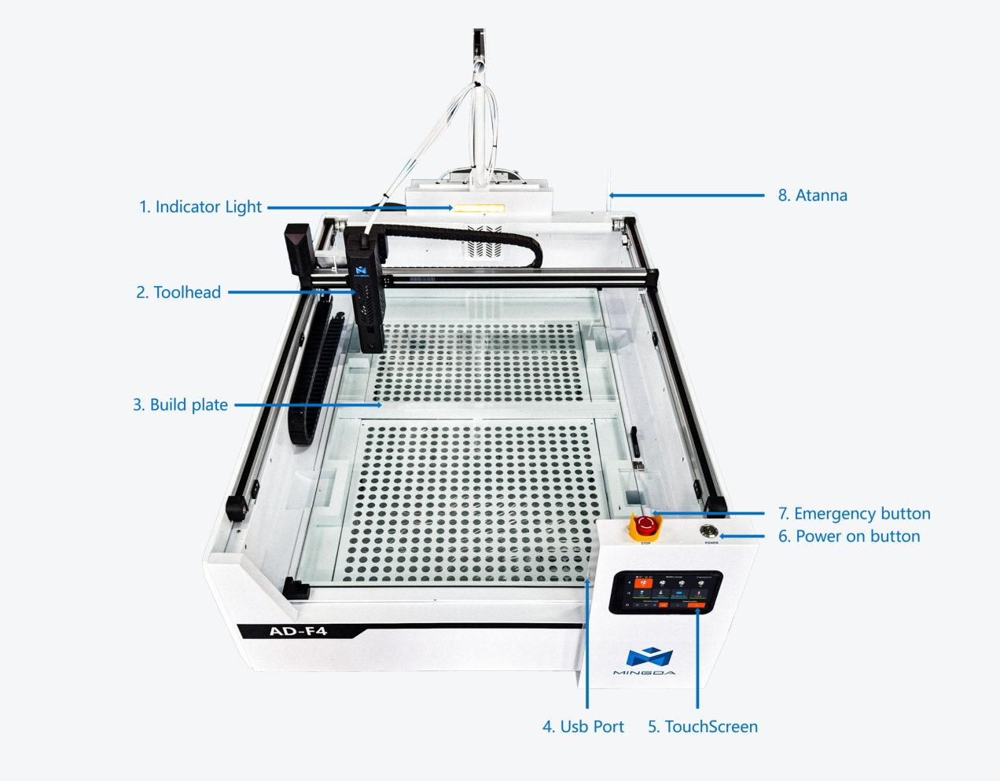
Pe cadru se regăsesc indicator light, toolhead, build plate, butonul de emergency stop, portul USB, ecranul tactil, camera, senzorul de filament, antena WiFi și cuplajul.
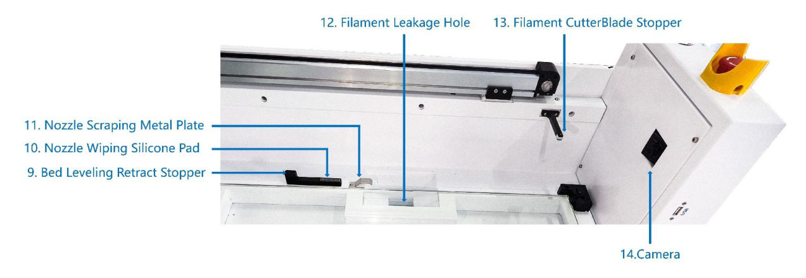
Cadrul portant include ghidajul de filament, axa Z, motoarele X/Y/Z și întinzătoarele de curea. Axa Z se mișcă lent, cu maximum 15 mm/s, în timp ce deplasarea în plan XY ajunge la 500 mm/s.
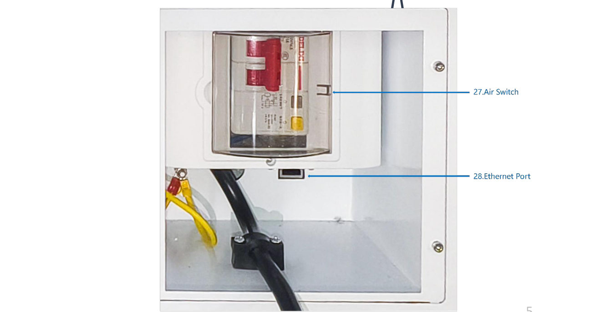
În compartimentul electric se află power switch, priza de alimentare și senzorul de filament care detectează epuizarea rolei. Alimentarea este 220 V, cu o putere maximă de 2700 W.
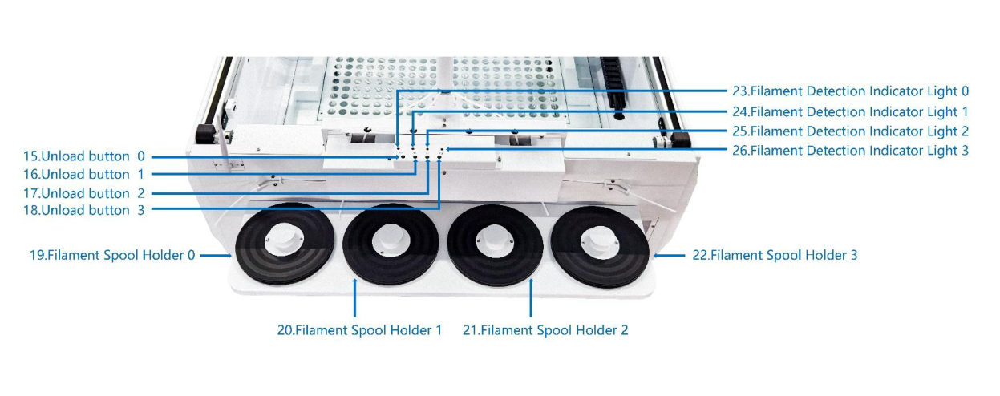
Toolhead-ul concentrează cele patru intrări de filament, sistemul de tăiere și nozzle-ul de 0,6 mm. Opțional se pot monta nozzle-uri de 0,4 mm sau 0,8 mm.
Specificații tehnice
- Model: AD-F4.
- Dimensiuni mașină: 1110 × 1730 × 515 mm.
- Volum maxim de printare: 1200 × 800 × 100 mm.
- Principiu: FDM (Fused Deposition Modeling).
- Grosime
layer: 0,2–0,42 mm. Nozzle: 4 intrări, 1 ieșire, 0,6 mm (opțional 0,4 mm și 0,8 mm).- Număr de tăvi: 4, maximum 1 kg pe tavă.
- Diametru
filament: 1,75 mm. - Viteză de printare: cu
nozzlede 0,4 mm până la 300 mm/s (recomandat 200 mm/s); cunozzlede 0,6 mm până la 150 mm/s (recomandat 120 mm/s). - Nivelare: automată, prin senzori de gravitație.
- Materiale: PLA, Ad-PETG, PDS.
- Temperatură
nozzle: maximum 350 °C. - Temperatură
heatbed: maximum 60 °C. - Funcții automate: detectarea epuizării
filamentului și reluarea printului după căderea curentului. - Firmware: Klipper.
- Conexiune de date: USB.
- Suprafață de printare: sticlă călită.
- Tăvi de
filament: pliabile. - Viteză de deplasare: maximum 500 mm/s în XY, 15 mm/s pe Z.
- Siguranță:
warning lightși buton deemergency stop.
Instalare și pornire
Pasul 1. Demontarea dispozitivului de fixare
Toolhead-ul este livrat blocat pentru transport. Deșurubează mai întâi șurubul de fixare de lângă extruder, împinge extruder-ul spre stânga, apoi scoate ultimul șurub al dispozitivului de fixare.
Pasul 2. Montarea suportului de filament
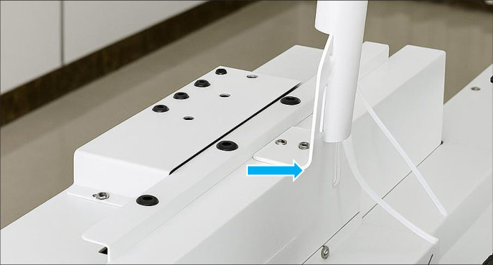
Montează suportul cu fața orientată spre exterior. Altfel filamentul nu ajunge corect la extruder.
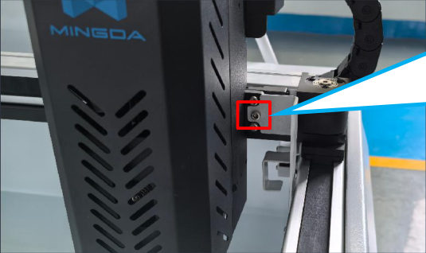
Strânge șuruburile suportului pe cadru, fără să deformezi profilele.
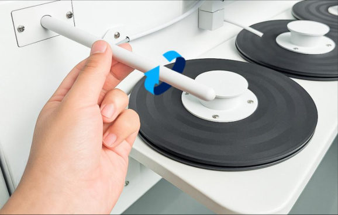
Așază rola pe suport și verifică faptul că se rotește liber.
Pasul 3. Montarea tubului PTFE
Introdu tuburile PTFE pe rând, câte unul pentru fiecare canal. Ține tubul drept în timpul introducerii, ca să nu se îndoaie sau să se răsucească.
Instalarea este completă când tubul nu mai poate fi împins. O tragere ușoară în sus nu trebuie să-l scoată din locaș.
Pasul 4. Fixarea tăvii de material
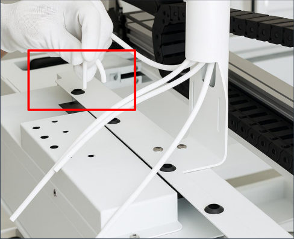
Ridică tava de jos și fixeaz-o ferm în poziție. Tava este pliabilă și trebuie să stea stabilă sub role.
Pasul 5. Montarea antenei
Înfiletează antena WiFi pe conectorul de pe cadru. Fără ea, printerul nu vede rețeaua.
Pasul 6. Alimentarea electrică
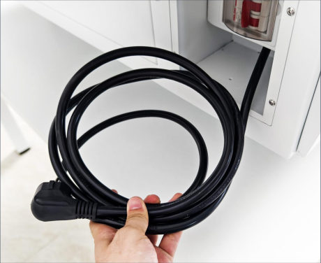
Conectează cablul de alimentare la priza din compartimentul electric și la o priză cu împământare.
Pasul 7. Pornirea
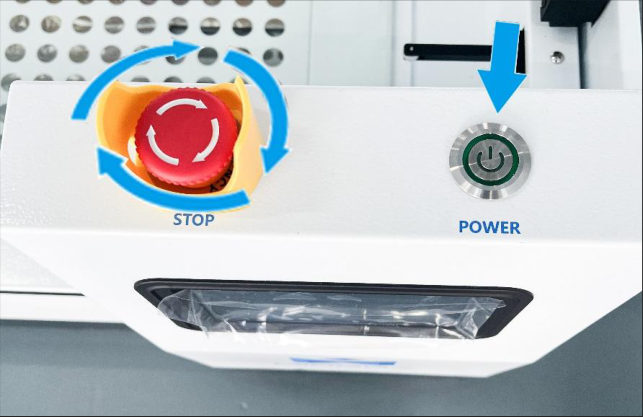
Eliberează butonul de emergency stop — rotește-l până sare înapoi — apoi apasă butonul de pornire.
Pasul 8. Oprirea
Nu apăsa butonul de pornire pentru a stinge printerul. Apasă Shutdown pe ecran și lasă mașina să se oprească singură.
Pasul 9. Wizard-ul de pornire
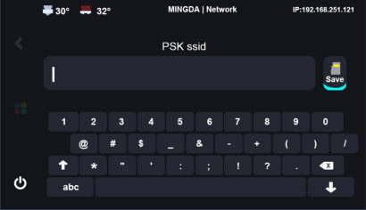
Alege limba din listă și apasă butonul de continuare.
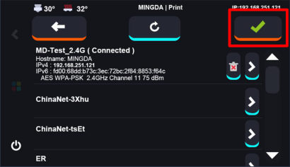
Scrie parola WiFi, apasă Select și confirmă. Dacă rețeaua nu apare în 20 de secunde, apasă Refresh. După conectare, apasă Enter pentru a intra în meniul principal.
Dacă printerul nu detectează deloc rețeaua, apasă Skip. Termină wizard-ul, apropie routerul de printer și reconectează-te ulterior din Settings > Network. Poți continua și fără rețea, dacă printezi doar de pe stick USB.
Interfața ecranului
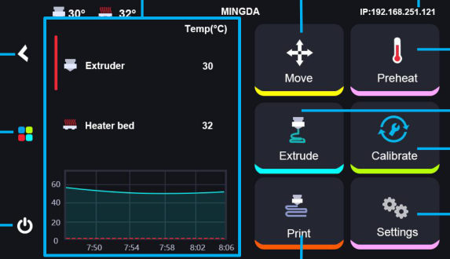
Meniul principal afișează temperatura, adresa IP și comenzile de bază.
Temperature— zona de afișare a temperaturilor.IP— adresa de rețea a printerului.Move— deplasează sau aduce la origine axele X, Y și Z.Preheat— presetează temperatura pentrunozzleșiheatbed.Extrude— încarcă sau descarcăfilament.Calibrate— calibrarea printerului.Settings— setările de bază.Print— pornește printarea.Shutdown— oprire, repornire,emergency stop.
Butoanele Homepage și Return readuc ecranul la meniul principal, respectiv la pagina anterioară.
Ecranul Extrude
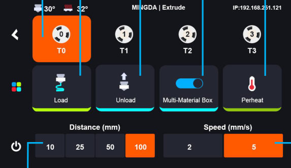
Filament [T0, T1, T2, T3]— alege canalul defilamentpe care lucrezi.Load— încarcăfilament.Unload— descarcăfilament.Multi Material Box— activează cele patruextrudere.Preheat— presetează temperaturile.Distance— lungimea defilamentîmpinsă la fiecare operație de încărcare.Speed— viteza de încărcare sau descărcare.
Ecranul Calibrate
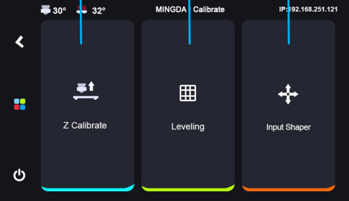
Z Calibrate— calibrează senzorul de nivelare.Leveling— nivelare automată a patului de sticlă.Input Shaper— activează compensarea vibrațiilor.
Ecranul Settings
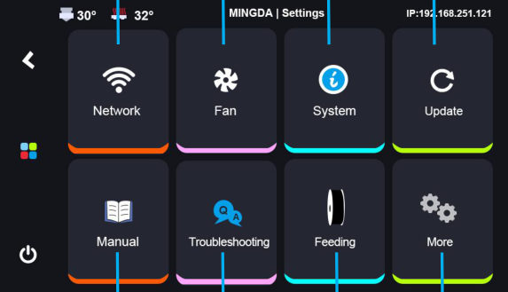
Network— conectare la WiFi.Fan— reglajul ventilatorului de răcire.System— informații despre sistemul printerului.Update— actualizare de firmware.Manual— manualul de utilizare.Troubleshooting— depanare.Feeding— parametrii fiecărui tip defilament.More— setări de bază: ora, limba, timeout-ul ecranului, sunetul notificărilor și oprirea automată după terminarea printului.
Ecranul de printare
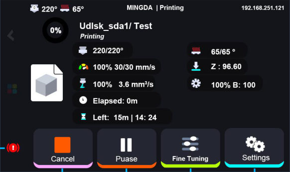
Cancel— oprește printarea.Pause— suspendă printarea.Fine Tuning— reglează Z-offset, viteza și debitul.Settings— setări de bază, camera, ventilatorul, lumina șiExclude Object.Stop— oprire de urgență.Exclude Object— anulează un singur obiect dintr-un print cu mai multe modele.
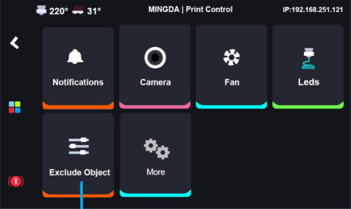
Din Settings-ul ecranului de printare se deschide panoul de control: notificări, cameră, ventilator, leduri și excluderea obiectelor.
Calibrare
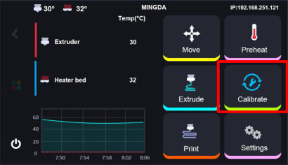
Ordinea este fixă: Z Calibrate → Leveling → Input Shaper → PID. Nu sări peste un pas și nu începe nivelarea înainte ca Z Calibrate să fie salvat.
Z Calibrate
- Apasă
Z Calibrate, apoiStart. Printerul se deplasează singur până se oprește în poziția din față. - Pune o foaie A4 între
nozzleși platformă. - Reglează cu butoanele
+și−până când foaia este zgâriată ușor. După fiecare mișcare, trage foaia înainte și înapoi ca să verifici tensiunea. - Confirmă valoarea, apoi apasă butonul de salvare. Printerul se repornește automat.
Calibrarea Z trebuie refăcută după schimbarea nozzle-ului, după schimbarea hotend-ului sau după demontarea și remontarea extruder-ului.
Leveling
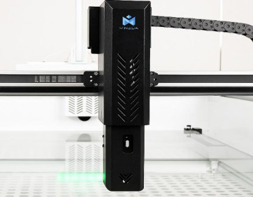
- Încălzește patul la 60 °C și așteaptă 20 de minute. Sticla se dilată, iar nivelarea făcută pe pat rece nu mai este valabilă la temperatura de print.
- Verifică faptul că
Z Calibrateeste terminat. - Apasă
Levelingși așteaptă aproximativ 15 minute.
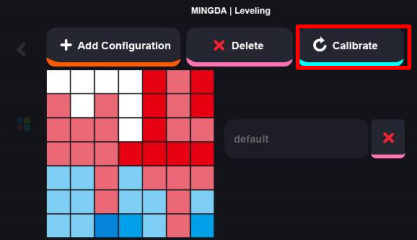
Printerul măsoară patul în mai multe puncte și construiește o hartă a suprafeței.
Recomandări de întreținere a nivelării:
- Rulează
Levelingla fiecare 20–25 de printuri. Scoatem și repunem des patul de sticlă, iar poziția se abate treptat. - Urmărește primul
layerla fiecare print nou. Un spațiu mare întrefilamentși pat, aderență slabă, colțuri ridicate, buclare sau extruzie neuniformă — zone prea groase, prea subțiri sau linii întrerupte — înseamnă că patul trebuie nivelat din nou. - Dacă temperatura de calibrare a patului este 60 °C, menține patul la 60 °C și înainte de print, cu aceeași pauză de 20 de minute. Aderența primului
layerdepinde direct de asta.
Input Shaper
- Apasă
Input Shaper. - Apasă
Auto-calibrate. - Salvează rezultatul după terminare.
Compensarea vibrațiilor reduce ringing-ul la viteze mari, vizibil mai ales pe literele cu muchii drepte.
PID
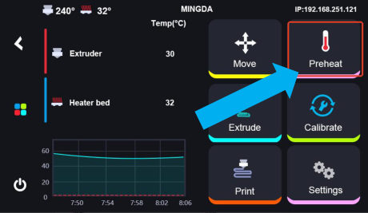
- Apasă
Preheat. - Selectează valoarea de temperatură și setează 220 °C.
- Apasă
Accept, apoiSave. - Apasă
Calibrate PID.
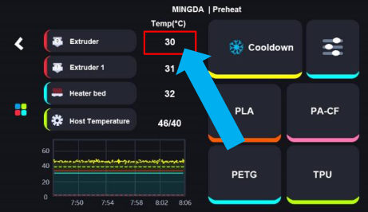
Calibrarea de temperatură este obligatorie înainte de prima utilizare. Valorile de compensare ale nozzle-ului se ajustează în funcție de temperatura ambientală, iar o calibrare corectă menține temperatura stabilă pe toată durata printului.
Repetă procesul de câteva ori, până când temperatura nozzle-ului se stabilizează rapid lângă valoarea țintă, cu variații de maximum ±2 °C. După calibrare, testează nozzle-ul la temperaturile obișnuite pentru fiecare material, ca să verifici stabilitatea în condiții reale de print.
Încărcarea filamentului
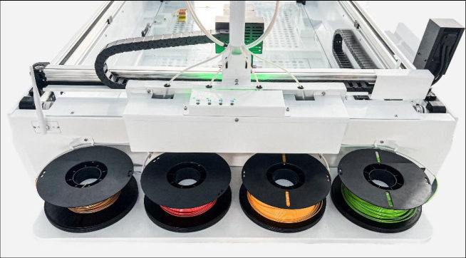
Așază rolele pe tava de material. Direcția de alimentare diferă în funcție de canal:
T0șiT1— alimentare în sens orar.T2șiT3— alimentare în sens antiorar.
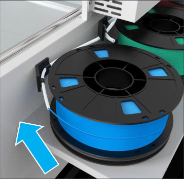
Introdu filamentul în tubul PTFE până când simți că extruder-ul începe să îl tragă, apoi dă drumul. Nu împinge cu forța: mecanismul preia singur filamentul.
Setarea parametrilor de material
- Apasă
Settings. - Intră la
Feeding. - Apasă pe
filamentși alegeEdit. - Setează temperatura recomandată pentru materialul respectiv.
- Salvează și revino la ecranul anterior.
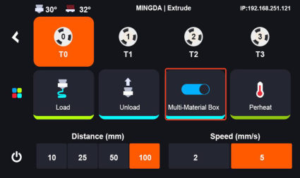
Încărcarea efectivă
- Apasă
Extrude. - Selectează
extruder-ul dorit, de exempluT0. - Setează
Distancela 100 mm șiSpeedla 5. - Apasă butonul de încărcare de 2–3 ori, până când
filamentul iese dinnozzle.
Două reguli pentru o încărcare corectă:
- Menține
filamentul întins în timpul încărcării. Unfilamentlăsat moale poate intra în fantele plăcii de bază și se poate agăța. - După ce termini
T0, treci laT1și tot așa, în ordine. Nu încărca toate canalele deodată.
Descărcarea filamentului
Înainte de descărcare, verifică faptul că printhead-ul nu folosește filamentul respectiv. Dacă îl folosește, apasă mai întâi Unload pe ecran.
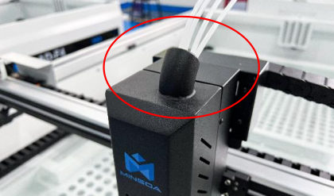
- Apasă
Extrude. - Apasă
Unload.Filamentul este tăiat automat. - Așteaptă 15 secunde după terminarea tăierii.
Filamentul este complet scos dinprinthead.
Pentru a goli tubul, apasă Unload din nou, pe canalul corespunzător.
Primul print
După instalare și calibrare, apasă Print și alege un model de test mic, cu suprafață plană. Modelul arată imediat dacă patul și Z-offset-ul sunt corecte.
Urmărește primul layer până se închide complet. Corecția la acest moment este mult mai simplă decât după câteva ore de print.
Reglajul fin al primului layer
- Apasă
Fine Tuningîn timpul printului. - Alege un pas de 0,02.
- Apasă
Z+pentru a ridicanozzle-ul sauZ−pentru a-l coborî. - Reglează până când liniile de extruzie se așază uniform și se aliniază corect.
Semnele sunt ușor de citit pe primul layer:
- Dacă între linii rămân goluri, Z-offset-ul este prea sus. Coboară
nozzle-ul. - Dacă suprafața are valuri, Z-offset-ul este prea jos. Ridică
nozzle-ul. - Dacă liniile sunt turtite uniform și se ating, fără să se suprapună, reglajul este bun.
Reluarea după întrerupere
AD-F4 poate continua un print din punctul în care a fost întrerupt.
După căderea curentului:
- Pornește printerul.
- La apariția mesajului, apasă
Accept. - Așteaptă reluarea printului.
După epuizarea filamentului:
- Se aprinde lumina galbenă de alarmă și printul se suspendă.
- Verifică ce led verde este stins — de exemplu, cel pentru
T3. - Selectează canalul respectiv,
T3. - Introdu
filamentul nou. - Apasă
Multi Material Box. - Așteaptă 30 de secunde, cât mașina încarcă automat
filamentul. - Apasă
Resume.
Printare cu patru culori
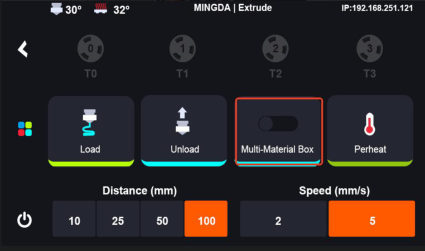
Multi Material Box activează cele patru canale. Cu opțiunea pornită, printerul folosește filamentul din tăvi și schimbă culoarea conform G-code-ului. Cu opțiunea oprită, printerul trage dintr-un singur filament extern.
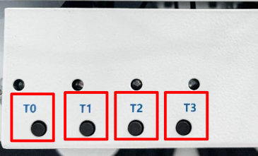
Fiecare canal are un led care indică starea:
- Led verde — canalul are
filament. - Led stins — canalul este gol.
- Led roșu — eroare de
filament. Citește mesajul de pe ecran sau descarcă și reîncarcăfilamentul.
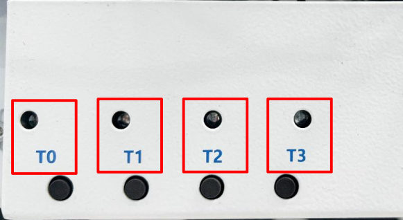
Înainte de un print multicolor, verifică toate cele patru leduri. Un canal gol descoperit la mijlocul printului oprește mașina și consumă timp.
Pentru încărcarea manuală a unui canal, folosește ecranul Extrude cu Distance 100 mm și Speed 5.
Slicer și AdWordCraft
Instalare
Descarcă Mingda OrcaSlicer de la www.3dmingda.com/download. Instalează-l pe calculatorul care va trimite fișierele la printer.
La prima pornire, slicerul deschide un wizard de configurare:
- Alege tipul de
filament. - Selectează MingDa AD-F4, cu
nozzlede 0,8 mm. - Apasă
Confirm. - Alege
filamentul cu care printezi. ModulAdvanceddeblochează parametrii suplimentari. - Apasă
Prepare.
AdWordCraft
AdWordCraft este aplicația pentru litere și panouri publicitare. Se lansează din iconița AD.
Dongle-ul trebuie introdus în calculator înainte de pornirea aplicației. Cu dongle-ul conectat, AdWordCraft funcționează normal. Dacă dongle-ul este scos în timpul lucrului, aplicația se oprește imediat și afișează o eroare.
Crearea textului
Poți importa fișiere vectoriale gata desenate, în format .svg sau .dxf, din meniul File, sau poți desena direct cu instrumentul de text.
După ce modelul există în scenă:
- Selectează modelul și aplică
Horizontal Mirror. Literele se printează cu fața în jos, deci trebuie oglindite. - Deschide panoul din dreapta și alege forma laturii, de exemplu
Straight Flange. - Setează înălțimea modelului la 40–60 mm.
- Setează grosimea fundului la 2 mm, dacă este nevoie.
- Setează grosimea peretelui ca multiplu al
nozzle-ului. Cunozzlede 0,8 mm, peretele poate fi de 1,6 mm. - Configurează locașul din partea de sus, care fixează placa de susținere a textului publicitar.
- Apasă
Createși salvează fișierul pe calculator.
Importul în slicer
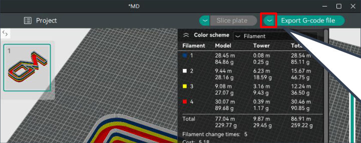
Încarcă fișierul în Mingda OrcaSlicer și ajustează parametrii modelului înainte de feliere.
Motivul de pe fund
- Apasă
Strength. - Setează
Top Shell LayersșiBottom Shell Layersla 0, ca straturile de suprafață să nu acopere motivul de pe fund. - În secțiunea
Infill, seteazăSparse Infill Densityla 40%. Densitatea se poate modifica după nevoie. - Alege modelul dorit la
Sparse Infill Pattern. - Apasă
Othersși seteazăBrim TypelaOuter Brim Only. Se generează doar conturul exterior, care îmbunătățește aderența la platformă. - Apasă
Slice Platepentru previzualizare. - Exportă cu
Export G-code file.
Culoare pe lateral
- Apasă
Cut [C]. - Alege înălțimea tăieturii. Pentru un model de 40 mm în patru culori, taie la 10 mm, 20 mm și 30 mm, succesiv.
- Bifează
Cut to parts, ca poziționarea originală să rămână neschimbată la segmentare. - Apasă
Perform cut. - Apasă
Objectspentru a schimba vizualizarea. - Dublu-click pe blocurile de culoare pentru a atribui fiecare culoare celor patru modele.
Turnul de curățare
La schimbarea filamentului rămâne material din culoarea anterioară în nozzle, iar modelul se pătează. Prime tower rezolvă problema: înainte de fiecare schimbare, nozzle-ul depune materialul rezidual pe turn.
- Deschide secțiunea
Multimaterial. - Bifează
Enablela setărilePrime tower.
Două precauții:
- Nu seta turnul prea mic. Curățarea insuficientă duce la amestec de culori.
- Așază turnul departe de model, ca să nu se suprapună.
Culoare pe fund
Pentru un model cu mai multe culori pe fund, împarte desenul în fișiere separate înainte de export:
- Exportă bordura modelului ca fișier separat
.dxfsau.svg. - Exportă fiecare dintre cele patru culori ca fișier separat
.dxfsau.svg.
Importă apoi fiecare fișier în AdWordCraft, setează parametrii și salvează.
Parametrii pentru bordură:
- Alege forma laterală dorită și ajustează parametrii.
- Setează
Bottom Closedla 0. - Setează
Wall Thicknessla valoarea potrivită. - Selectează modelul și aplică
Horizontal Mirror. - Apasă
Create.
Parametrii pentru fund:
- Setează grosimea fundului la 2 mm, iar ceilalți parametri la zero sau anulează-i.
- Selectează modelul și aplică
Horizontal Mirror. - Apasă
Create.
Aranjarea modelelor în slicer
- Apasă butonul care comută pe interfața
Objects. - Dublu-click pe blocul de culoare pentru a schimba culoarea modelului.
- Mută fiecare model la poziția corectă.
Modelele sunt suprapuse, deci greu de distins. Ridică temporar un model ca să lucrezi mai ușor:
- Selectează modelul din panoul din stânga.
- Apasă
Scale [S]. - Debifează
Uniform Scaleși crește înălțimea pe Z. - Ajustează pozițiile.
- După aranjare, readu modelul la înălțimea inițială.
Ordinea de prioritate contează la modelele care se suprapun: modelul mai mic are prioritate mai mare. În interfața Objects, modelele cu prioritate mare stau jos, iar cele cu prioritate mică sus. Pentru exemplul din manual, ordinea este:
White font > Yellow font > Blue side > Red heart > Entire bottom > Border.
Trage fișierele STL în panoul din stânga pentru a le ordona. Apoi:
- Apasă
Ctrl + Apentru a selecta toate fișierele. - Click dreapta și alege
Assemble, ca modelele să fie grupate într-o singură ansamblare. - Apasă
Slice Platepentru previzualizare. - Dacă totul arată corect, apasă
Export G-code File.
Printare în rețea
Printarea prin rețea locală este metoda recomandată. Printerul și calculatorul trebuie să fie în aceeași rețea.
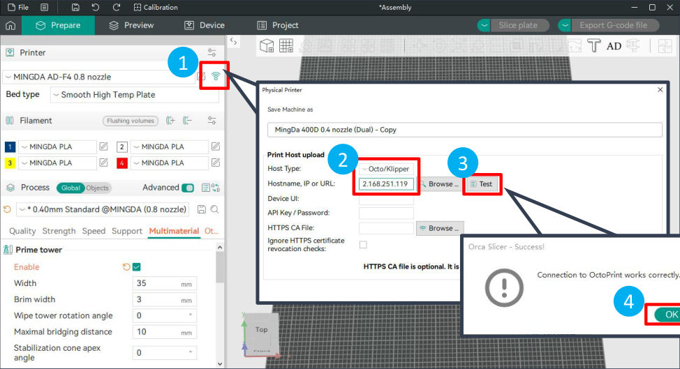
- Apasă
Settingspe ecranul printerului. - Intră la
Network. - Notează adresa IP a printerului.
- În slicer, apasă
WiFi, alegeHost typecaOcto/Klipper, scrie adresa IP. - Apasă
Test, apoiOK.
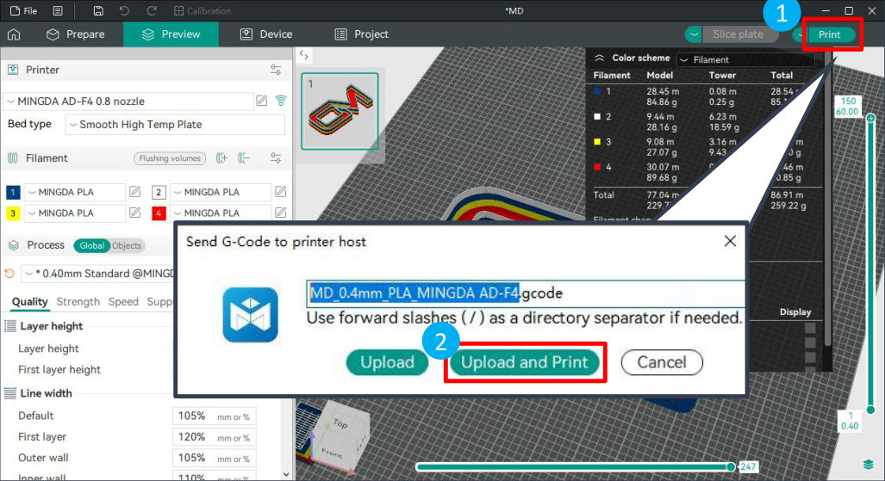
Pentru trimiterea fișierului:
- Apasă iconița din colțul din dreapta sus și alege
Print. - Apasă
Printși alegeUpload and Print.
Alternativ, copiază fișierul G-code de pe stick USB:
- Apasă
Copy. - Șterge textul de dinaintea simbolului
/, inclusiv simbolul. - Apasă
Save.
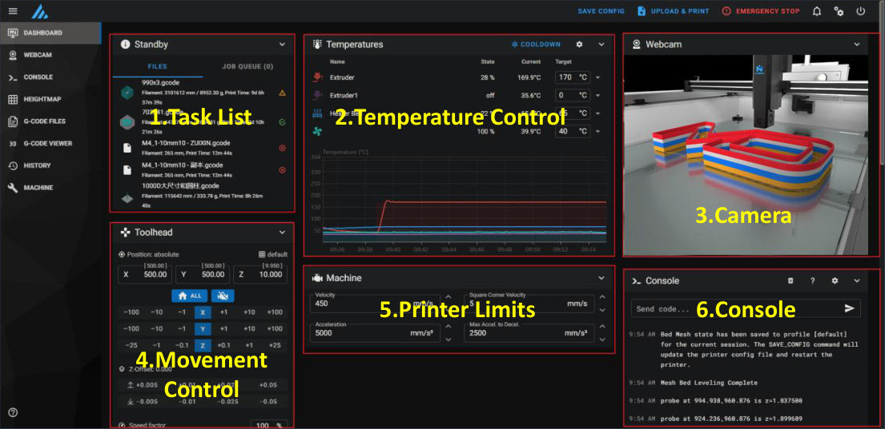
După conectare, apasă Device pentru panoul de control:
Task List— trage fișiereleG-codeîn listă pentru printare.Temperature Control— afișează temperatura mașinii și permite presetarea temperaturilor pentrunozzleși pat.Camera— monitorizează starea printului.Movement Control— controlează mișcarea fiecărei axe și permite compensări după nivelare.Printer Limits— controlează accelerația maximă. De obicei nu trebuie modificată.Console— trimite comenziG-codeși afișează erorile.
Întreținere
Curățarea nozzle-ului
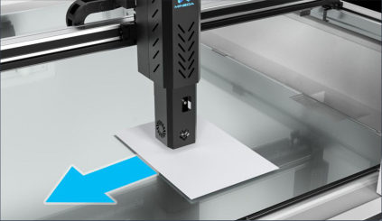
După print, curăță materialul rămas pe nozzle cu o cârpă fără scame. Profită de căldura reziduală, când materialul se desprinde ușor. Nu atinge nozzle-ul direct.
Înlocuirea filamentului
Schimbă filamentul în funcție de utilizare și de tipul de material. Pentru rezultate constante, folosește filament MINGDA. Păstrează rolele nefolosite într-un recipient închis etanș, ca să nu absoarbă umezeală și să devină casante.
Verificarea platformei
Inspectează periodic platforma de sticlă. Dacă observi crăpături, ciobituri sau zgârieturi adânci, contactează distribuitorul pentru o piesă de schimb.
Lubrifiere
Lubrifiază regulat ghidajele și rulmenții. Frecarea dintre piese produce uzură și zgomot dacă suprafețele rămân uscate.
Curățarea roții de alimentare
Curăță roata de alimentare la fiecare trei luni, ca să îndepărtezi reziduurile acumulate. Astfel se mențin precizia alimentării și stabilitatea sistemului.
Înlocuirea cutter-ului
Verifică trimestrial cutter-ul: urmărește uzura vizibilă a lamei și semnele de deteriorare. Înlocuiește-l fără întârziere dacă tăieturile ies neuniforme, dacă filamentul nu este secționat complet sau dacă apare o rezistență ori un zgomot anormal la rotire, care afectează printarea normală.